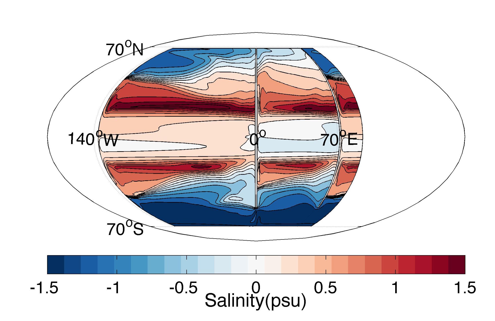

| Home | Publications | Contact |
C. Spencer JonesI am a postdoctoral research scientist in Physical Oceanography at Lamont Doherty Earth Observatory. I am interested in the transport of heat, salt and tracers by the ocean on large scales. I am using a combination of idealized numerical modeling and theory to study the Meridional Overturning Circulation. My idealized model (shown right) displays deep water formation in the narrow basin only. Because forcing is zonally uniform, this must be due to the width of the basin. CV |

Surface salinity when surface forcing is zonally uniform. Deep water formation occurs in the north of the narrow basin. |
|
|
The animation to the right shows the path of a particle through my idealized model with zonally symmetric forcing. It starts in the wide basin, passes into the narrow basin, flows north around the gyres, and sinks in the north of the narrow basin. |
||